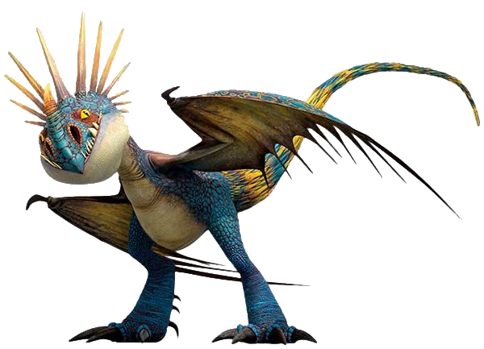

Szelidítsd meg a legszebb példányt! Szombaton 15:00-kor anonim szavazás alapján a győztes, melynek szelidítője dicsőséget, és akár egy díjat is nyerhet!

Jelenleg nem aktív az esemény!
Fellelhető: Folyók, Erdők, Nyírerdők, Ősi nyírerdők (És lehetségesen máshol)
Támadás:10, Sebesség:8, Páncél:16, Tűzerő:18, Lövések-száma:6, Méreg:16, Harapáserő:5, Lopakodás:10
A siklósárkány egy közepes méretű nyomkövető osztályú sárkány. Korábban az éles osztályba sorolták,
kifejezetten jó hallássa és szaglássa volt az átsorolás oka.
Jellegzetes farkát borító tüskéit képes leválasztani és célpontjára hajítani. Ezen felül képes csak egy tüskét nagy
pontossággal kilőni (A játékban nincs ilyen képessége, amennyire tudjuk). Közvetlenül orra előtt vakfoltja van,
(de mint tudjuk, süketfoltja nemigen).
A sárkányok közül az egyik legforróbb, magnézium tűzzel rendelk. Távolról kedvel harcolni elleivel.